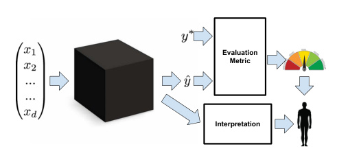
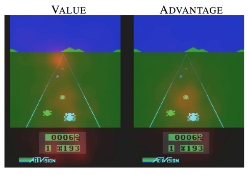

Zachary C. Lipton1
Abstract
Supervised machine learning models boast remarkable predictive capabilities. But can you trust your model? Will it work in deployment? What else can it tell you about the world? We want models to be not only good, but interpretable. And yet the task of interpretation appears underspecified. Papers provide diverse and sometimes non-overlapping motivations for interpretability, and offer myriad notions of what attributes render models interpretable. Despite this ambiguity, many papers proclaim interpretability axiomatically, absent further explanation. In this paper, we seek to refine the discourse on interpretability. First, we examine the motivations underlying interest in interpretability, finding them to be diverse and occasionally discordant. Then, we address model properties and techniques thought to confer interpretability, identifying transparency to humans and post-hoc explanations as competing notions. Throughout, we discuss the feasibility and desirability of different notions, and question the oft-made assertions that linear models are interpretable and that deep neural networks are not.
1. Introduction
As machine learning models penetrate critical areas like medicine, the criminal justice system, and financial markets, the inability of humans to understand these models seems problematic (Caruana et al., 2015; Kim, 2015). Some suggest model interpretability as a remedy, but few articulate precisely what interpretability means or why it is important. Despite the absence of a definition, papers frequently make claims about the interpretability of various models. From this, we might conclude that either: (i) the definition of interpretability is universally agreed upon, but
1University of California, San Diego. Correspondence to: Zachary C. Lipton < zlipton@cs.ucsd.edu > .
2016 ICML Workshop on Human Interpretability in Machine Learning (WHI 2016), New York, NY, USA. Copyright by the author(s).
no one has managed to set it in writing, or (ii) the term interpretability is ill-defined, and thus claims regarding interpretability of various models may exhibit a quasi-scientific character. Our investigation of the literature suggests the latter to be the case. Both the motives for interpretability and the technical descriptions of interpretable models are diverse and occasionally discordant, suggesting that interpretability refers to more than one concept. In this paper, we seek to clarify both, suggesting that interpretability is not a monolithic concept, but in fact reflects several distinct ideas. We hope, through this critical analysis, to bring focus to the dialogue.
Here, we mainly consider supervised learning and not other machine learning paradigms, such as reinforcement learning and interactive learning. This scope derives from our original interest in the oft-made claim that linear models are preferable to deep neural networks on account of their interpretability (Lou et al., 2012). To gain conceptual clarity, we ask the refining questions: What is interpretability and why is it important? Broadening the scope of discussion seems counterproductive with respect to our aims. For research investigating interpretability in the context of reinforcement learning, we point to (Dragan et al., 2013) which studies the human interpretability of robot actions. By the same reasoning, we do not delve as much as other papers might into Bayesian methods, however try to draw these connections where appropriate.
To ground any discussion of what might constitute interpretability, we first consider the various desiderata put forth in work addressing the topic (expanded in § 2). Many papers propose interpretability as a means to engender trust (Kim, 2015; Ridgeway et al., 1998). But what is trust? Does it refer to faith in a model’s performance (Ribeiro et al., 2016), robustness, or to some other property of the decisions it makes? Does interpretability simply mean a low-level mechanistic understanding of our models? If so does it apply to the features, parameters, models, or training algorithms? Other papers suggest a connection between an interpretable model and one which uncovers causal structure in data (Athey & Imbens, 2015). The legal notion of a right to explanation offers yet another lens on interpretability.
Often, our machine learning problem formulations are im-
perfect matches for the real-life tasks they are meant to solve. This can happen when simplified optimization objectives fail to capture our more complex real-life goals. Consider medical research with longitudinal data. Our real goal may be to discover potentially causal associations, as with smoking and cancer (Wang et al., 1999). But the optimization objective for most supervised learning models is simply to minimize error, a feat that might be achieved in a purely correlative fashion.
Another such divergence of real-life and machine learning problem formulations emerges when the off-line training data for a supervised learner is not perfectly representative of the likely deployment environment. For example, the environment is typically not stationary. This is the case for product recommendation, as new products are introduced and preferences for some items shift daily. In more extreme cases, actions influenced by a model may alter the environment, invalidating future predictions.
Discussions of interpretability sometimes suggest that human decision-makers are themselves interpretable because they can explain their actions (Ridgeway et al., 1998). But precisely what notion of interpretability do these explanations satisfy? They seem unlikely to clarify the mechanisms or the precise algorithms by which brains work. Nevertheless, the information conferred by an interpretation may be useful. Thus, one purpose of interpretations may be to convey useful information of any kind.
After addressing the desiderata of interpretability, we consider what properties of models might render them interpretable (expanded in § 3). Some papers equate interpretability with understandability or intelligibility (Lou et al., 2013), i.e., that we can grasp how the models work . In these papers, understandable models are sometimes called transparent , while incomprehensible models are called black boxes . But what constitutes transparency? We might look to the algorithm itself. Will it converge? Does it produce a unique solution? Or we might look to its parameters: do we understand what each represents? Alternatively, we could consider the model’s complexity. Is it simple enough to be examined all at once by a human?
Other papers investigate so-called post-hoc interpretations. These interpretations might explain predictions without elucidating the mechanisms by which models work. Examples of post-hoc interpretations include the verbal explanations produced by people or the saliency maps used to analyze deep neural networks. Thus, humans decisions might admit post-hoc interpretability despite the black box nature of human brains, revealing a contradiction between two popular notions of interpretability.
2. Desiderata of Interpretability Research
At present, interpretability has no formal technical meaning. One aim of this paper is to propose more specific definitions. Before we can determine which meanings might be appropriate, we must ask what the real-world objectives of interpretability research are. In this section we spell out the various desiderata of interpretability research through the lens of the literature.
While these desiderata are diverse, it might be instructive to first consider a common thread that persists throughout the literature: The demand for interpretability arises when there is a mismatch between the formal objectives of supervised learning (test set predictive performance) and the real world costs in a deployment setting.

Evaluation
Metric
Interpretation
Figure 1. Typically, evaluation metrics require only predictions and ground truth labels. When stakeholders additionally demand interpretability , we might infer the existence of desiderata that cannot be captured in this fashion.
Consider that most common evaluation metrics for supervised learning require only predictions, together with ground truth, to produce a score. These metrics can be be assessed for every supervised learning model. So the very desire for an interpretation suggests that in some scenarios, predictions alone and metrics calculated on these predictions do not suffice to characterize the model (Figure 1). We should then ask, what are these other desiderata and under what circumstances are they sought?
However inconveniently, it turns out that many situations arise when our real world objectives are difficult to encode as simple real-valued functions. For example, an algorithm for making hiring decisions should simultaneously optimize productivity, ethics, and legality. But typically, ethics and legality cannot be directly optimized. The problem can also arise when the dynamics of the deployment environment differ from the training environment. In all cases, interpretations serve those objectives that we deem important but struggle to model formally.
2.1. Trust
Some papers motivate interpretability by suggesting it to be prerequisite for trust (Kim, 2015; Ribeiro et al., 2016). But what is trust? Is it simply confidence that a model will perform well? If so, a sufficiently accurate model should be demonstrably trustworthy and interpretability would serve no purpose. Trust might also be defined subjectively. For example, a person might feel more at ease with a wellunderstood model, even if this understanding served no obvious purpose. Alternatively, when the training and deployment objectives diverge, trust might denote confidence that the model will perform well with respect to the real objectives and scenarios.
For example, consider the growing use of machine learning models to forecast crime rates for purposes of allocating police officers. We may trust the model to make accurate predictions but not to account for racial biases in the training data for the model’s own effect in perpetuating a cycle of incarceration by over-policing some neighborhoods. Another sense in which we might trust a machine learning model might be that we feel comfortable relinquishing control to it. In this sense, we might care not only about how often a model is right but also for which examples it is right . If the model tends to make mistakes in regions of input space where humans also make mistakes, and is typically accurate when humans are accurate, then it may be considered trustworthy in the sense that there is no expected cost of relinquishing control. But if a model tends to make mistakes for inputs that humans classify accurately, then there may always be an advantage to maintaining human supervision of the algorithms.
2.2. Causality
Although supervised learning models are only optimized directly to make associations, researchers often use them in the hope of inferring properties or generating hypotheses about the natural world. For example, a simple regression model might reveal a strong association between thalidomide use and birth defects or smoking and lung cancer (Wang et al., 1999).
The associations learned by supervised learning algorithms are not guaranteed to reflect causal relationships. There could always exist unobserved causes responsible for both associated variables. One might hope, however, that by interpreting supervised learning models, we could generate hypotheses that scientists could then test experimentally. Liu et al. (2005), for example, emphasizes regression trees and Bayesian neural networks, suggesting that models are interpretable and thus better able to provide clues about the causal relationships between physiologic signals and affective states. The task of inferring causal relationships from observational data has been extensively studied
(Pearl, 2009). But these methods tend to rely on strong assumptions of prior knowledge.
2.3. Transferability
Typically we choose training and test data by randomly partitioning examples from the same distribution. We then judge a model’s generalization error by the gap between its performance on training and test data. However, humans exhibit a far richer capacity to generalize, transferring learned skills to unfamiliar situations. We already use machine learning algorithms in situations where such abilities are required, such as when the environment is nonstationary. We also deploy models in settings where their use might alter the environment, invalidating their future predictions. Along these lines, Caruana et al. (2015) describe a model trained to predict probability of death from pneumonia that assigned less risk to patients if they also had asthma. In fact, asthma was predictive of lower risk of death. This owed to the more aggressive treatment these patients received. But if the model were deployed to aid in triage, these patients would then receive less aggressive treatment, invalidating the model.
Even worse, we could imagine situations, like machine learning for security, where the environment might be actively adversarial. Consider the recently discovered susceptibility of convolutional neural networks (CNNs) to adversarial examples. The CNNs were made to misclassify images that were imperceptibly (to a human) perturbed (Szegedy et al., 2013). Of course, this isn’t overfitting in the classical sense. The results achieved on training data generalize well to i.i.d. test data. But these are mistakes a human wouldn’t make and we would prefer models not to make these mistakes either.
Already, supervised learning models are regularly subject to such adversarial manipulation. Consider the models used to generate credit ratings, scores that when higher should signify a higher probability that an individual repays a loan. According to their own technical report, FICO trains credit models using logistic regression (Fair Isaac Corporation, 2011), specifically citing interpretability as a motivation for the choice of model. Features include dummy variables representing binned values for average age of accounts, debt ratio, and the number of late payments, and the number of accounts in good standing.
Several of these factors can be manipulated at will by credit-seekers. For example, one’s debt ratio can be improved simply by requesting periodic increases to credit lines while keeping spending patterns constant. Similarly, the total number of accounts can be increased by simply applying for new accounts, when the probability of acceptance is reasonably high. Indeed, FICO and Experian both acknowledge that credit ratings can be manipulated, even
suggesting guides for improving one’s credit rating. These rating improvement strategies do not fundamentally change one’s underlying ability to pay a debt. The fact that individuals actively and successfully game the rating system may invalidate its predictive power.
2.4. Informativeness
Sometimes we apply decision theory to the outputs of supervised models to take actions in the real world. However, in another common use paradigm, the supervised model is used instead to provide information to human decision makers, a setting considered by Kim et al. (2015); Huysmans et al. (2011). While the machine learning objective might be to reduce error, the real-world purpose is to provide useful information. The most obvious way that a model conveys information is via its outputs. However, it may be possible via some procedure to convey additional information to the human decision-maker.
By analogy, we might consider a PhD student seeking advice from her advisor. Suppose the student asks what venue would best suit a paper. The advisor could simply name one conference, but this may not be especially useful. Even if the advisor is reasonably intelligent, the terse reply doesn’t enable the student to meaningfully combine the advisor’s knowledge with her own.
An interpretation may prove informative even without shedding light on a model’s inner workings. For example, a diagnosis model might provide intuition to a human decision-maker by pointing to similar cases in support of a diagnostic decision. In some cases, we train a supervised learning model, but our real task more closely resembles unsupervised learning. Here, our real goal is to explore the data and the objective serves only as weak supervision .
Recidivism predictions are already used to determine who to release and who to detain, raising ethical concerns.1 How can we be sure that predictions do not discriminate on the basis of race? Conventional evaluation metrics such as accuracy or AUC offer little assurance that a model and via decision theory, its actions, behave acceptably. Thus demands for fairness often lead to demands for interpretable models.
New regulations in the European Union propose that individuals affected by algorithmic decisions have a right to explanation (Goodman & Flaxman, 2016). Precisely what form such an explanation might take or how such an explanation could be proven correct and not merely appeasing remain open questions. Moreover the same regulations suggest that algorithmic decisions should be contestable . So in order for such explanations to be useful it seems they must (i) present clear reasoning based on falsifiable propositions and (ii) offer some natural way of contesting these propositions and modifying the decisions appropriately if they are falsified.
3. Properties of Interpretable Models
We turn now to consider the techniques and model properties that are proposed either to enable or to comprise interpretations . These broadly fall into two categories. The first relates to transparency , i.e., how does the model work? The second consists of post-hoc explanations , i.e., what else can the model tell me? This division is a useful organizationally, but we note that it is not absolute. For example post-hoc analysis techniques attempt to uncover the significance of various of parameters, an aim we group under the heading of transparency.
3.1. Transparency
2.5. Fair and Ethical Decision-Making
At present, politicians, journalists and researchers have expressed concern that we must produce interpretations for the purpose of assessing whether decisions produced automatically by algorithms conform to ethical standards (Goodman & Flaxman, 2016).
The concerns are timely: Algorithmic decision-making mediates more and more of our interactions, influencing our social experiences, the news we see, our finances, and our career opportunities. We task computer programs with approving lines of credit, curating news, and filtering job applicants. Courts even deploy computerized algorithms to predict risk of recidivism, the probability that an individual relapses into criminal behavior (Chouldechova, 2016). It seems likely that this trend will only accelerate as breakthroughs in artificial intelligence rapidly broaden the capabilities of software.
Informally, transparency is the opposite of opacity or blackbox-ness . It connotes some sense of understanding the mechanism by which the model works. We consider transparency at the level of the entire model ( simulatability ), at the level of individual components (e.g. parameters) ( decomposability ), and at the level of the training algorithm ( algorithmic transparency ).
3.1.1. SIMULATABILITY
In the strictest sense, we might call a model transparent if a person can contemplate the entire model at once. This definition suggests that an interpretable model is a simple model. We might think, for example that for a model to be fully understood, a human should be able to take the
1 It seems reasonable to argue that under most circumstances, risk-based punishment is fundamentally unethical, but this discussion requires exceeds the present scope.
input data together with the parameters of the model and in reasonable time step through every calculation required to produce a prediction. This accords with the common claim that sparse linear models, as produced by lasso regression (Tibshirani, 1996), are more interpretable than dense linear models learned on the same inputs. Ribeiro et al. (2016) also adopt this notion of interpretability, suggesting that an interpretable model is one that “can be readily presented to the user with visual or textual artifacts.”
For some models, such as decision trees, the size of the model (total number of nodes) may grow much faster than the time to perform inference (length of pass from root to leaf). This suggests that simulatability may admit two subtypes, one based on the total size of the model and another based on the computation required to perform inference.
Fixing a notion of simulatability, the quantity denoted by reasonable is subjective. But clearly, given the limited capacity of human cognition, this ambiguity might only span several orders of magnitude. In this light, we suggest that neither linear models, rule-based systems, nor decision trees are intrinsically interpretable. Sufficiently highdimensional models, unwieldy rule lists, and deep decision trees could all be considered less transparent than comparatively compact neural networks.
3.1.2. DECOMPOSABILITY
A second notion of transparency might be that each part of the model - each input, parameter, and calculation - admits an intuitive explanation. This accords with the property of intelligibility as described by (Lou et al., 2012). For example, each node in a decision tree might correspond to a plain text description (e.g. all patients with diastolic blood pressure over 150 ). Similarly, the parameters of a linear model could be described as representing strengths of association between each feature and the label.
Note that this notion of interpretability requires that inputs themselves be individually interpretable, disqualifying some models with highly engineered or anonymous features. While this notion is popular, we shouldn’t accept it blindly. The weights of a linear model might seem intuitive, but they can be fragile with respect to feature selection and pre-processing. For example, associations between flu risk and vaccination might be positive or negative depending on whether the feature set includes indicators of old age, infancy, or immunodeficiency.
3.1.3. ALGORITHMIC TRANSPARENCY
A final notion of transparency might apply at the level of the learning algorithm itself. For example, in the case of linear models, we understand the shape of the error surface. We can prove that training will converge to a unique solu-
tion, even for previously unseen datasets. This may give some confidence that the model might behave in an online setting requiring programmatic retraining on previously unseen data. On the other hand, modern deep learning methods lack this sort of algorithmic transparency. While the heuristic optimization procedures for neural networks are demonstrably powerful, we don’t understand how they work, and at present cannot guarantee a priori that they will work on new problems. Note, however, that humans exhibit none of these forms of transparency.
3.2. Post-hoc Interpretability
Post-hoc interpretability presents a distinct approach to extracting information from learned models. While posthoc interpretations often do not elucidate precisely how a model works, they may nonetheless confer useful information for practitioners and end users of machine learning. Some common approaches to post-hoc interpretations include natural language explanations, visualizations of learned representations or models, and explanations by example (e.g. this tumor is classified as malignant because to the model it looks a lot like these other tumors ).
To the extent that we might consider humans to be interpretable, it is this sort of interpretability that applies. For all we know, the processes by which we humans make decisions and those by which we explain them may be distinct. One advantage of this concept of interpretability is that we can interpret opaque models after-the-fact, without sacrificing predictive performance.
3.2.1. TEXT EXPLANATIONS
Humans often justify decisions verbally. Similarly, we might train one model to generate predictions and a separate model, such as a recurrent neural network language model, to generate an explanation. Such an approach is taken in a line of work by Krening et al. (2016). They propose a system in which one model (a reinforcement learner) chooses actions to optimize cumulative discounted return. They train another model to map a model’s state representation onto verbal explanations of strategy. These explanations are trained to maximize the likelihood of previously observed ground truth explanations from human players, and may not faithfully describe the agent’s decisions, however plausible they appear. We note a connection between this approach and recent work on neural image captioning in which the representations learned by a discriminative convolutional neural network (trained for image classification) are co-opted by a second model to generate captions. These captions might be regarded as interpretations that accompany classifications.
In work on recommender systems, McAuley & Leskovec (2013) use text to explain the decisions of a latent factor
model. Their method consists of simultaneously training a latent factor model for rating prediction and a topic model for product reviews. During training they alternate between decreasing the squared error on rating prediction and increasing the likelihood of review text. The models are connected because they use normalized latent factors as topic distributions. In other words, latent factors are regularized such that they are also good at explaining the topic distributions in review text. The authors then explain user-item compatibility by examining the top words in the topics corresponding to matching components of their latent factors. Note that the practice of interpreting topic models by presenting the top words is itself a post-hoc interpretation technique that has invited scrutiny (Chang et al., 2009).
3.2.2. VISUALIZATION
Another common approach to generating post-hoc interpretations is to render visualizations in the hope of determining qualitatively what a model has learned. One popular approach is to visualize high-dimensional distributed representations with t-SNE (Van der Maaten & Hinton, 2008), a technique that renders 2D visualizations in which nearby data points are likely to appear close together.
Mordvintsev et al. (2015) attempt to explain what an image classification network has learned by altering the input through gradient descent to enhance the activations of certain nodes selected from the hidden layers. An inspection of the perturbed inputs can give clues to what the model has learned. Likely because the model was trained on a large corpus of animal images, they observed that enhancing some nodes caused the dog faces to appear throughout the input image.
In the computer vision community, similar approaches have been explored to investigate what information is retained at various layers of a neural network. Mahendran & Vedaldi (2015) pass an image through a discriminative convolutional neural network to generate a representation. They then demonstrate that the original image can be recovered with high fidelity even from reasonably high-level representations (level 6 of an AlexNet) by performing gradient descent on randomly initialized pixels.
3.2.3. LOCAL EXPLANATIONS
While it may be difficult to succinctly describe the full mapping learned by a neural network, some papers focus instead on explaining what a neural network depends on locally. One popular approach for deep neural nets is to compute a saliency map. Typically, they take the gradient of the output corresponding to the correct class with respect to a given input vector. For images, this gradient can be applied as a mask (Figure 2), highlighting regions of the input that, if changed, would most influence the output (Si-
monyan et al., 2013; Wang et al., 2015).
Note that these explanations of what a model is focusing on may be misleading. The saliency map is a local explanation only. Once you move a single pixel, you may get a very different saliency map. This contrasts with linear models, which model global relationships between inputs and outputs.

Figure 2. Saliency map by Wang et al. (2015) to convey intuition over what the value function and advantage function portions of their deep Q-network are focusing on.
Another attempt at local explanations is made by Ribeiro et al. (2016). In this work, the authors explain the decisions of any model in a local region near a particular point, by learning a separate sparse linear model to explain the decisions of the first.
3.2.4. EXPLANATION BY EXAMPLE
One post-hoc mechanism for explaining the decisions of a model might be to report (in addition to predictions) which other examples the model considers to be most similar, a method suggested by Caruana et al. (1999). After training a deep neural network or latent variable model for a discriminative task, we then have access not only to predictions but also to the learned representations. Then, for any example, in addition to generating a prediction, we can use the activations of the hidden layers to identify the k -nearest neighbors based on the proximity in the space learned by the model. This sort of explanation by example has precedent in how humans sometimes justify actions by analogy. For example, doctors often refer to case studies to support a planned treatment protocol.
In the neural network literature, Mikolov et al. (2013) use such an approach to examine the learned representations of words after word2vec training. While their model is trained for discriminative skip-gram prediction, to examine what relationships the model has learned, they enumerate near-
est neighbors of words based on distances calculated in the latent space. We also point to related work in Bayesian methods: Kim et al. (2014) and Doshi-Velez et al. (2015) investigate cased-base reasoning approaches for interpreting generative models.
4. Discussion
The concept of interpretability appears simultaneously important and slippery. Earlier, we analyzed both the motivations for interpretability and some attempts by the research community to confer it. In this discussion, we consider the implications of our analysis and offer several takeaways to the reader.
4.1. Linear models are not strictly more interpretable than deep neural networks
Despite this claim’s enduring popularity, its truth content varies depending on what notion of interpretability we employ. With respect to algorithmic transparency , this claim seems uncontroversial, but given high dimensional or heavily engineered features, linear models lose simulatability or decomposability , respectively.
When choosing between linear and deep models, we must often make a trade-off between algorithic transparency and decomposability . This is because deep neural networks tend to operate on raw or lightly processed features. So if nothing else, the features are intuitively meaningful, and post-hoc reasoning is sensible. However, in order to get comparable performance, linear models often must operate on heavily hand-engineered features. Lipton et al. (2016) demonstrates such a case where linear models can only approach the performance of RNNs at the cost of decomposability.
For some kinds of post-hoc interpretation, deep neural networks exhibit a clear advantage. They learn rich representations that can be visualized, verbalized, or used for clustering. Considering the desiderata for interpretability, linear models appear to have a better track record for studying the natural world but we do not know of a theoretical reason why this must be so. Conceivably, post-hoc interpretations could prove useful in similar scenarios.
4.2. Claims about interpretability must be qualified
As demonstrated in this paper, the term does not reference a monolithic concept. To be meaningful, any assertion regarding interpretability should fix a specific definition. If the model satisfies a form of transparency, this can be shown directly. For post-hoc interpretability, papers ought to fix a clear objective and demonstrate evidence that the offered form of interpretation achieves it.
4.3. In some cases, transparency may be at odds with the broader objectives of AI
Some arguments against black-box algorithms appear to preclude any model that could match or surpass our abilities on complex tasks. As a concrete example, the shortterm goal of building trust with doctors by developing transparent models might clash with the longer-term goal of improving health care. We should be careful when giving up predictive power, that the desire for transparency is justified and isn’t simply a concession to institutional biases against new methods.
4.4. Post-hoc interpretations can potentially mislead
We caution against blindly embracing post-hoc notions of interpretability, especially when optimized to placate subjective demands. In such cases, one might - deliberately or not - optimize an algorithm to present misleading but plausible explanations. As humans, we are known to engage in this behavior, as evidenced in hiring practices and college admissions. Several journalists and social scientists have demonstrated that acceptance decisions attributed to virtues like leadership or originality often disguise racial or gender discrimination (Mounk, 2014). In the rush to gain acceptance for machine learning and to emulate human intelligence, we should be careful not to reproduce pathological behavior at scale.
4.5. Future Work
We see several promising directions for future work. First, for some problems, the discrepancy between real-life and machine learning objectives could be mitigated by developing richer loss functions and performance metrics. Exemplars of this direction include research on sparsity-inducing regularizers and cost-sensitive learning. Second, we can expand this analysis to other ML paradigms such as reinforcement learning. Reinforcement learners can address some (but not all) of the objectives of interpretability research by directly modeling interaction between models and environments. However, this capability may come at the cost of allowing models to experiment in the world, incurring real consequences. Notably, reinforcement learners are able to learn causal relationships between their actions and real world impacts. However, like supervised learning, reinforcement learning relies on a well-defined scalar objective. For problems like fairness, where we struggle to verbalize precise definitions of success, a shift of ML paradigm is unlikely to eliminate the problems we face.
5. Contributions
This paper identifies an important but under-recognized problem: the term interpretability holds no agreed upon
meaning, and yet machine learning conferences frequently publish papers which wield the term in a quasimathematical way. For these papers to be meaningful and for this field to progress, we must critically engage the issue of problem formulation. Moreover, we identify the incompatibility of most presently investigated interpretability techniques with pressing problems facing machine learning in the wild. For example, little in the published work on model intepretability addresses the idea of contestability.
This paper makes a first step towards providing a comprehensive taxonomy of both the desiderata and methods in interpretability research. We argue that the paucity of critical writing in the machine learning community is problematic. When we have solid problem formulations, flaws in methodology can be addressed by articulating new methods. But when the problem formulation itself is flawed, neither algorithms nor experiments are sufficient to address the underlying problem.
Moreover, as machine learning continues to exert influence upon society, we must be sure that we are solving the right problems. While lawmakers and policymakers must increasingly consider the impact of machine learning, the responsibility to account for the impact of machine learning and to ensure its alignment with societal desiderata must ultimately be shared by practitioners and researchers in the field. Thus, we believe that such critical writing ought to have a voice at machine learning conferences.
References
-
Athey, Susan and Imbens, Guido W. Machine learning methods for estimating heterogeneous causal effects. Stat , 2015.
-
Caruana, Rich, Kangarloo, Hooshang, Dionisio, JD, Sinha, Usha, and Johnson, David. Case-based explanation of non-case-based learning methods. In Proceedings of the AMIA Symposium , pp. 212, 1999.
-
Caruana, Rich, Lou, Yin, Gehrke, Johannes, Koch, Paul, Sturm, Marc, and Elhadad, No´emie. Intelligible models for healthcare: Predicting pneumonia risk and hospital 30-day readmission. In KDD , 2015.
-
Chang, Jonathan, Gerrish, Sean, Wang, Chong, BoydGraber, Jordan L, and Blei, David M. Reading tea leaves: How humans interpret topic models. In NIPS , 2009.
-
Chouldechova, Alexandra. Fair prediction with disparate impact: A study of bias in recidivism prediction instruments. arXiv:1610.07524 , 2016.
-
Doshi-Velez, Finale, Wallace, Byron, and Adams, Ryan. Graph-sparse lda: a topic model with structured sparsity. AAAI , 2015.
-
Dragan, Anca D, Lee, Kenton CT, and Srinivasa, Siddhartha S. Legibility and predictability of robot motion. In Human-Robot Interaction (HRI), 2013 8th ACM/IEEE International Conference on . IEEE, 2013.
-
Fair Isaac Corporation. Introduction to scorecard for fico model builder, 2011. URL http://www. fico.com/en/node/8140?file=7900. Accessed: 2017-02-22.
-
Goodman, Bryce and Flaxman, Seth. European union regulations on algorithmic decision-making and a” right to explanation”. arXiv:1606.08813 , 2016.
-
Huysmans, Johan, Dejaeger, Karel, Mues, Christophe, Vanthienen, Jan, and Baesens, Bart. An empirical evaluation of the comprehensibility of decision table, tree and rule based predictive models. Decision Support Systems , 2011.
-
Kim, Been. Interactive and interpretable machine learning models for human machine collaboration . PhD thesis, Massachusetts Institute of Technology, 2015.
-
Kim, Been, Rudin, Cynthia, and Shah, Julie A. The Bayesian Case Model: A generative approach for casebased reasoning and prototype classification. In NIPS , 2014.
-
Kim, Been, Glassman, Elena, Johnson, Brittney, and Shah, Julie. ibcm: Interactive bayesian case model empowering humans via intuitive interaction. 2015.
-
Krening, Samantha, Harrison, Brent, Feigh, Karen, Isbell, Charles, Riedl, Mark, and Thomaz, Andrea. Learning from explanations using sentiment and advice in rl. IEEE Transactions on Cognitive and Developmental Systems , 2016.
-
Lipton, Zachary C, Kale, David C, and Wetzel, Randall. Modeling missing data in clinical time series with rnns. In Machine Learning for Healthcare , 2016.
-
Liu, Changchun, Rani, Pramila, and Sarkar, Nilanjan. An empirical study of machine learning techniques for affect recognition in human-robot interaction. In International Conference on Intelligent Robots and Systems . IEEE, 2005.
-
Lou, Yin, Caruana, Rich, and Gehrke, Johannes. Intelligible models for classification and regression. In KDD , 2012.
-
Lou, Yin, Caruana, Rich, Gehrke, Johannes, and Hooker, Giles. Accurate intelligible models with pairwise interactions. In KDD , 2013.
-
Mahendran, Aravindh and Vedaldi, Andrea. Understanding deep image representations by inverting them. In CVPR , 2015.
-
McAuley, Julian and Leskovec, Jure. Hidden factors and hidden topics: understanding rating dimensions with review text. In RecSys . ACM, 2013.
-
Mikolov, Tomas, Sutskever, Ilya, Chen, Kai, Corrado, Greg S, and Dean, Jeff. Distributed representations of words and phrases and their compositionality. In NIPS , pp. 3111–3119, 2013.
-
Mordvintsev, Alexander, Olah, Christopher, and Tyka, Mike. Inceptionism: Going deeper into neural networks. Google Research Blog. Retrieved June , 2015.
-
Mounk, Yascha. Is Harvard unfair to asianamericans?, 2014. URL http://www. nytimes.com/2014/11/25/opinion/ is-harvard-unfair-to-asian-americans. html?_r=0.
-
Pearl, Judea. Causality . Cambridge university press, 2009.
-
Ribeiro, Marco Tulio, Singh, Sameer, and Guestrin, Carlos. ”why should i trust you?”: Explaining the predictions of any classifier. KDD , 2016.
-
Ridgeway, Greg, Madigan, David, Richardson, Thomas, and O’Kane, John. Interpretable boosted na¨ıve bayes classification. In KDD , 1998.
-
Simonyan, Karen, Vedaldi, Andrea, and Zisserman, Andrew. Deep inside convolutional networks: Visualising image classification models and saliency maps. arXiv:1312.6034 , 2013.
-
Szegedy, Christian, Zaremba, Wojciech, Sutskever, Ilya, Bruna, Joan, Erhan, Dumitru, Goodfellow, Ian, and Fergus, Rob. Intriguing properties of neural networks. arXiv:1312.6199 , 2013.
-
Tibshirani, Robert. Regression shrinkage and selection via the lasso. Journal of the Royal Statistical Society. Series B (Methodological) , 1996.
-
Van der Maaten, Laurens and Hinton, Geoffrey. Visualizing data using t-sne. JMLR , 2008.
-
Wang, Hui-Xin, Fratiglioni, Laura, Frisoni, Giovanni B, Viitanen, Matti, and Winblad, Bengt. Smoking and the occurence of alzheimer’s disease: Cross-sectional and longitudinal data in a population-based study. American journal of epidemiology , 1999.
-
Wang, Ziyu, de Freitas, Nando, and Lanctot, Marc. Dueling network architectures for deep reinforcement learning. arXiv:1511.06581 , 2015.